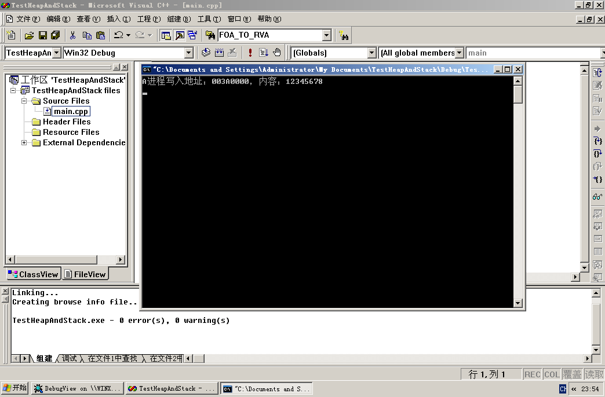
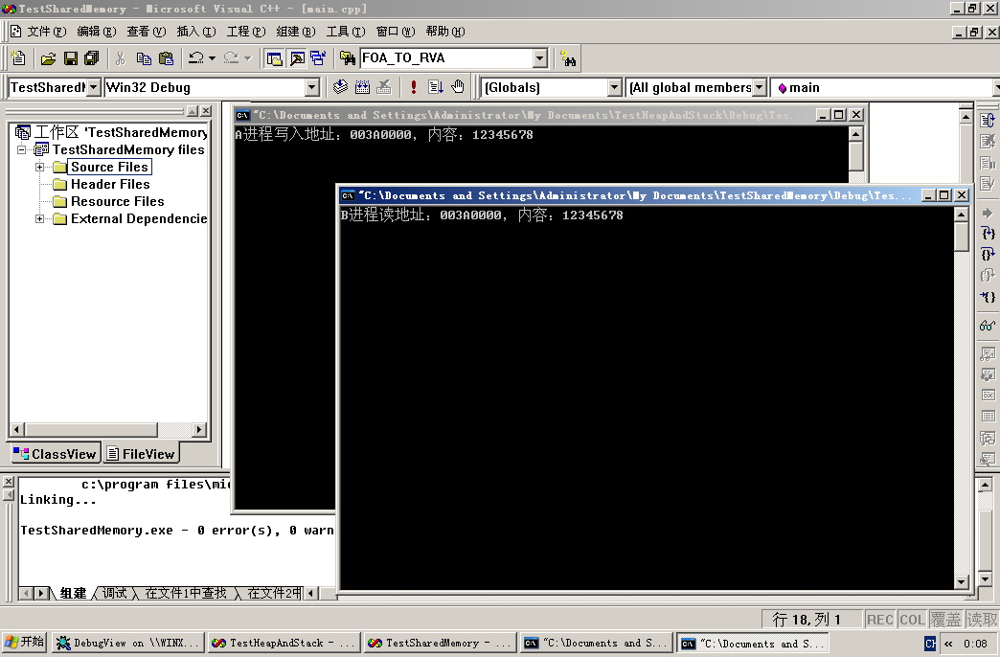
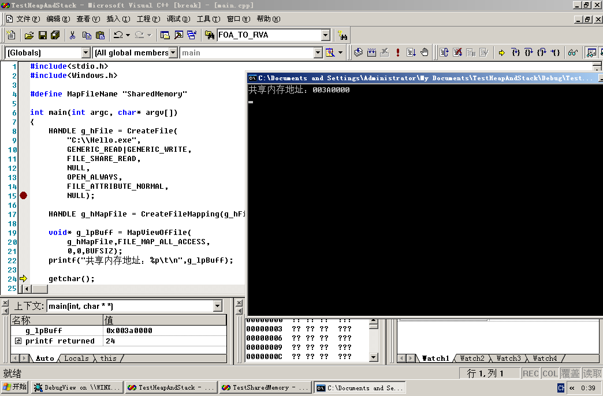

# Mapped Memory
前面了解了私有内存，接下来认识一下映射内存，这种内存的好处是可以跟其他进程共享物理页。
在前面的用 !vad 查看内存结构中，可以发现后面有文件路径的就是映射内存。
可以共享一个物理页，也可以共享一份文件。
# 实验演示
# 共享物理页
#include<stdio.h> | |
#include<Windows.h> | |
#define BUFSIZ 0x200 | |
#define MapFileName "SharedMemory" | |
int main(int argc, char* argv[]) | |
{ | |
// 内核对象：1、物理页 2、文件 | |
HANDLE g_hMapFile = CreateFileMapping( | |
INVALID_HANDLE_VALUE,NULL, | |
PAGE_READWRITE,0,BUFSIZ,MapFileName); | |
// 将物理页与线性地址进行映射 | |
LPTSTR g_lpBuff = (LPTSTR)MapViewOfFile( | |
g_hMapFile,FILE_MAP_ALL_ACCESS, | |
0,0,BUFSIZ); | |
*(PDWORD)g_lpBuff = 0x12345678; | |
printf("A进程写入地址：%p，内容：%x\t\n",g_lpBuff,(*(PDWORD)g_lpBuff)); | |
getchar(); | |
return 0; | |
} |

接下来我们观察内存结构
kd> !vad 0x8a098e90 | |
VAD Level Start End Commit | |
…… | |
…… | |
89acf150 8 3a0 3a0 0 Mapped READWRITE Pagefile section, shared commit 0x1 | |
…… | |
…… |
可以看到是一个页的大小。所以映射内存也是以页为单位的。
接下来在 B 进程中读取一下共享内存
#include<stdio.h> | |
#include<Windows.h> | |
#define BUFSIZ 0x200 | |
#define MapFileName "SharedMemory" | |
int main(int argc, char* argv[]) | |
{ | |
// 内核对象：1、物理页 2、文件 | |
HANDLE g_hMapFile = OpenFileMapping(FILE_MAP_ALL_ACCESS,FALSE,MapFileName); | |
// 将物理页与线性地址进行映射 | |
LPTSTR g_lpBuff = (LPTSTR)MapViewOfFile( | |
g_hMapFile,FILE_MAP_ALL_ACCESS, | |
0,0,BUFSIZ); | |
printf("B进程读地址：%p，内容：%x\t\n",g_lpBuff,(*(PDWORD)g_lpBuff)); | |
getchar(); | |
return 0; | |
} |

查看 B 进程的内存结构：
kd> !vad 0x8a05b8b8 | |
VAD Level Start End Commit | |
…… | |
…… | |
8a0ff3b0 8 3a0 3a0 0 Mapped READWRITE Pagefile section, shared commit 0x1 | |
…… | |
…… |
可以看到也是一个页的大小。
# 共享文件
文件映射进内存
#include<stdio.h> | |
#include<Windows.h> | |
#define MapFileName "SharedMemory" | |
int main(int argc, char* argv[]) | |
{ | |
HANDLE g_hFile = CreateFile( | |
"C:\\Hello.exe", | |
GENERIC_READ|GENERIC_WRITE, | |
FILE_SHARE_READ, | |
NULL, | |
OPEN_ALWAYS, | |
FILE_ATTRIBUTE_NORMAL, | |
NULL); | |
HANDLE g_hMapFile = CreateFileMapping(g_hFile,NULL,PAGE_READWRITE,0, BUFSIZ,NULL); | |
void* g_lpBuff = MapViewOfFile( | |
g_hMapFile,FILE_MAP_ALL_ACCESS, | |
0,0,BUFSIZ); | |
printf("共享内存地址：%p\t\n",g_lpBuff); | |
getchar(); | |
return 0; | |
} |

观察内存结构:
kd> !vad 0x8a0a6b00 | |
VAD Level Start End Commit | |
…… | |
…… | |
89ad82d8 8 3a0 3a0 0 Mapped READWRITE \Hello.exe | |
…… | |
89ac3e88 3 7c800 7c91d 6 Mapped Exe EXECUTE_WRITECOPY \WINDOWS\system32\kernel32.dll | |
89e0fbc0 2 7c920 7c9b2 5 Mapped Exe EXECUTE_WRITECOPY \WINDOWS\system32\ntdll.dll | |
…… | |
…… |
可以看到在我们映射的 Hello.exe 文件。这种共享文件特别适合那种大的文件。
** 细心的人可能发现了。** 我们的文件是 READWRITE 而有的是 EXECUTE_WRITECOPY ?
#include<stdio.h> | |
#include<Windows.h> | |
int main(int argc, char* argv[]) | |
{ | |
LoadLibrary("C:\\Hello.exe"); | |
system("pause"); | |
return 0; | |
} |
观察内存结构:
kd> !vad 0x89ad1e98 | |
VAD Level Start End Commit | |
…… | |
…… | |
89ac98d0 8 3a0 3aa 4 Mapped Exe EXECUTE_WRITECOPY \Hello.exe | |
…… | |
…… | |
89d0ec98 8 77fc0 77fd0 2 Mapped Exe EXECUTE_WRITECOPY \WINDOWS\system32\secur32.dll | |
89ad18c8 3 7c800 7c91d 6 Mapped Exe EXECUTE_WRITECOPY \WINDOWS\system32\kernel32.dll | |
8a15c988 2 7c920 7c9b2 5 Mapped Exe EXECUTE_WRITECOPY \WINDOWS\system32\ntdll.dll | |
…… | |
…… |
通过这些我们应该明白了什么是 LoadLibrary 。跟映射文件唯一的区别就是属性， LoadLibrary 的属性只有一种就是 EXECUTE_WRITECOPY 。
当了解这些后我们对内存就会了如指掌，如果想模块隐藏只能申请一块私有内存然后在里面填写数据，拉伸、抹去 PE 指纹，这样想要检测就很难了。